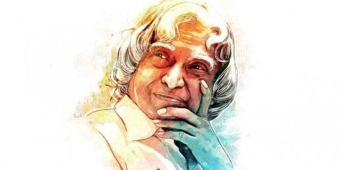

1931-2015
"If you want to shine like a sun, first burn like a sun"
Great personalities are not born every day; they are born once in a century and are remembered for millennials to come. One such great personality that we will always be proud of is Dr. APJ Abdul Kalam. His full name was Avul Pakir Jainulabdeen Abdul Kalam, born in Rameswaram of Madras Presidency on 15th October 1931 and died on July 27, 2015, Shillong. He was an Indian Scientist and also a politician leader, who later became the 11th President of India. He played an important role in the development of India’s missile and nuclear weapons program.
Abdul Kalam was elected as the eleventh president of India in 2002 with the assistance of the ruling Bharatiya Janata Party and the then-competition Indian National Congress. He is widely referred to as the "People's President". He spent four decades as a scientist and science administrator, especially on the Defence Research and Development Organisation (DRDO) and Indian Space Research Organisation (ISRO), and became concerned with India's civilian space program and army missile improvement efforts.
Abdul Kalam lowered back to his civilian lifestyle of schooling, writing, and public career after a single term. He received Bharat Ratna for his prestigious work.